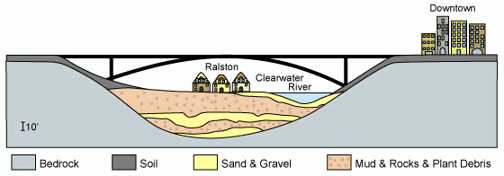

This cross-section (looking towards
the east) was prepared by geologists who examined the foundation test drillings
for the Clearwater Bridge. It shows a view of the Clearwater Bridge, a portion
of Ralston, and appoximately 55 feet of surface materials underlying the
valley of the Clearwater River.